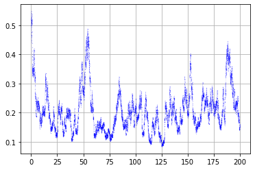
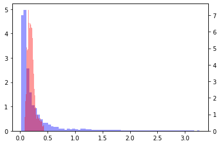
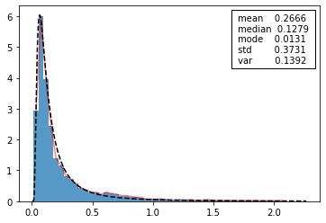
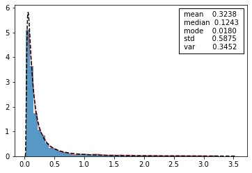
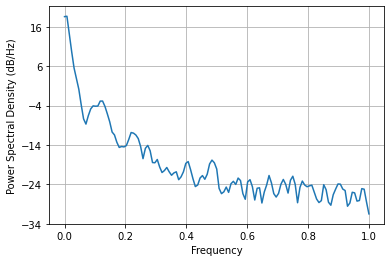
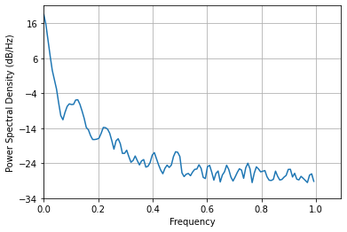
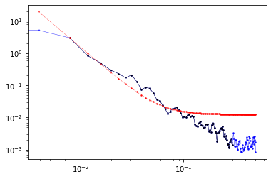

Stochastic light curves: Orstein-Uhlenbeck process.¶
We are going to implement and analyze the Orstein-Uhlenbeck process and its implementation in the context of Monte Carlo generation of synthetic light curves for MUTIS.
Wiener process, a.k.a one of the simplest SDE:
\[dX = f (X, t)dt + f(X, t)dW_t\]
One of the simplest form it can take is
\[dX = θ (μ − X)dt + σ XdW_t\]
a.k.a the Orstein-Uhlenbeck process.
[1]:
import numpy as np
import scipy as sp
import scipy.integrate
import scipy.stats
import scipy.signal
import pandas as pd
import matplotlib as mplt
import matplotlib.pyplot as plt
from matplotlib.offsetbox import AnchoredText
from numpy import pi as pi
#%matplotlib widget
Set up parameters¶
Define the parameters of the process and its precision on integration.
[2]:
theta = 0.1
mu = 0.5
sigma = 0.8
X0 = mu
N = 10000
tf = 200
l = 2*theta/sigma**2
l
[2]:
0.31249999999999994
Integrate¶
Using scipy integrator¶
[3]:
%%time
# Integrator 1
dt = tf/N
def yp(t,y):
return theta*(mu-y)+sigma*y*np.random.randn()/np.sqrt(dt)
t = np.linspace(0,tf,N)
sol = sp.integrate.solve_ivp(yp, y0=[X0], t_span=(0,tf), t_eval=t)
CPU times: user 13.8 s, sys: 150 ms, total: 13.9 s
Wall time: 14 s
[4]:
plt.figure()
plt.plot(sol.t,sol.y[0], 'b.--', lw=0.1, markersize=0.2)
plt.grid()
plt.show()

Just integrate the fuck out of it¶
[5]:
%%time
# Integrator 2
t = np.linspace(0,tf,N)
y = np.empty(N)
y[0] = X0
for i in np.arange(1,N):
y[i] = y[i-1] + dt*(theta*(mu-y[i-1]) + sigma*y[i-1]*np.random.randn()/np.sqrt(dt))
CPU times: user 35.9 ms, sys: 1.53 ms, total: 37.5 ms
Wall time: 36.2 ms
[6]:
plt.figure()
plt.title('U-O process')
plt.plot(t,y, 'b.--', lw=0.1, markersize=0.2)
#plt.ylim([0,3])
plt.grid()
plt.show()

Compare distributions¶
[7]:
bins = np.int(y.size**0.5/1.5) #bins='auto'
rang = (np.percentile(y,0), np.percentile(y,99))
fig, ax = plt.subplots()
ax.hist(y, density=True, color='b', alpha=0.4, bins=bins, range=rang)
ax2 = ax.twinx()
y2 = sol.y[0]
bins = np.int(y2.size**0.5/1.5) #bins='auto'
rang = (np.percentile(y2,0), np.percentile(y2,99))
plt.hist(y2, density=True, color='r', alpha=0.4, bins=bins, range=rang)
plt.show()
<ipython-input-7-9df2e7904adf>:1: DeprecationWarning: `np.int` is a deprecated alias for the builtin `int`. To silence this warning, use `int` by itself. Doing this will not modify any behavior and is safe. When replacing `np.int`, you may wish to use e.g. `np.int64` or `np.int32` to specify the precision. If you wish to review your current use, check the release note link for additional information.
Deprecated in NumPy 1.20; for more details and guidance: https://numpy.org/devdocs/release/1.20.0-notes.html#deprecations
bins = np.int(y.size**0.5/1.5) #bins='auto'
<ipython-input-7-9df2e7904adf>:12: DeprecationWarning: `np.int` is a deprecated alias for the builtin `int`. To silence this warning, use `int` by itself. Doing this will not modify any behavior and is safe. When replacing `np.int`, you may wish to use e.g. `np.int64` or `np.int32` to specify the precision. If you wish to review your current use, check the release note link for additional information.
Deprecated in NumPy 1.20; for more details and guidance: https://numpy.org/devdocs/release/1.20.0-notes.html#deprecations
bins = np.int(y2.size**0.5/1.5) #bins='auto'

Statistical analysis of the generated curve¶
Plot distribution and fit psd curve¶
[8]:
bins = np.int(y.size**0.5/2) #bins='auto'
rang = (np.percentile(y,0), np.percentile(y,99))
p, x = np.histogram(y, density=True, bins=bins, range=rang) #bins='sqrt')
x = (x + np.roll(x, -1))[:-1] / 2.0
<ipython-input-8-7ed976a91696>:1: DeprecationWarning: `np.int` is a deprecated alias for the builtin `int`. To silence this warning, use `int` by itself. Doing this will not modify any behavior and is safe. When replacing `np.int`, you may wish to use e.g. `np.int64` or `np.int32` to specify the precision. If you wish to review your current use, check the release note link for additional information.
Deprecated in NumPy 1.20; for more details and guidance: https://numpy.org/devdocs/release/1.20.0-notes.html#deprecations
bins = np.int(y.size**0.5/2) #bins='auto'
[9]:
%%time
plt.figure()
plt.hist(y, density=True, alpha=0.75, bins=bins, range=rang)
plt.plot(x,p,'r-', alpha=0.5)
anchored_text = AnchoredText(" mean {:.4f} \n median {:.4f} \n mode {:.4f} \n std {:.4f} \n var {:.4f}".format(np.mean(y), np.median(y), sp.stats.mode(y)[0][0], np.std(y), np.var(y)), loc='upper right')
plt.gca().add_artist(anchored_text)
pdf = lambda x,l,mu: (l*mu)**(1+l)/sp.special.gamma(1+l)*np.exp(-l*mu/x)/x**(l+2)
try:
popt, pcov = sp.optimize.curve_fit(f=pdf, xdata=x, ydata=p)
x_c = np.linspace(0,1.1*np.max(x),1000)
plt.plot(x_c,pdf(x_c,*popt), 'k--')
print('popt: ')
print(popt)
print('pcov: ')
print(np.sqrt(np.diag(pcov)))
l_est, mu_est = popt
eps = 0.05*mu_est
idx = np.abs(y-mu_est) < eps
dy = y[1:]-y[:-1]
sig_est = 1/(np.std(dy[idx[:-1]])/np.sqrt(dt))
print('sig_est: (método chusco)')
print(sig_est)
except Exception as e:
print('Some error fitting:')
print(e)
plt.show()
popt:
[0.61313638 0.27235715]
pcov:
[0.03559051 0.01120313]
sig_est: (método chusco)
4.301335057059811
<timed exec>:10: RuntimeWarning: invalid value encountered in double_scalars
<timed exec>:10: RuntimeWarning: divide by zero encountered in true_divide
<timed exec>:10: RuntimeWarning: invalid value encountered in true_divide

CPU times: user 188 ms, sys: 11.5 ms, total: 199 ms
Wall time: 194 ms
Extraction of sigma¶
[10]:
dy = y[1:]-y[:-1]
sigma_est = (np.mean(dy**2/y[:-1]**2))**0.5/np.sqrt(dt)
sigma_est
[10]:
0.7946161168743257
Fit data to distribution with MLE¶
[11]:
%%time
plt.figure()
plt.hist(y, density=True, alpha=0.75, bins=bins, range=rang)
plt.plot(x,p,'r-', alpha=0.5)
anchored_text = AnchoredText(" mean {:.4f} \n median {:.4f} \n mode {:.4f} \n std {:.4f} \n var {:.4f}".format(np.mean(y), np.median(y), sp.stats.mode(y)[0][0], np.std(y), np.var(y)), loc='upper right')
plt.gca().add_artist(anchored_text)
class OU(sp.stats.rv_continuous):
def _pdf(self,x,l,mu):
return (l*mu)**(1+l)/sp.special.gamma(1+l)*np.exp(-l*mu/x)/x**(l+2)
try:
fit = OU(a=0.00001, b=100*np.percentile(y,100)).fit(y,1,1, floc=0, fscale=1)
print('fit: ')
print(fit)
x_c = np.linspace(0,1.1*np.max(x),1000)
plt.plot(x_c,pdf(x_c, fit[0],fit[1]), 'k--')
except Exception as e:
print('Some error fitting:')
print(e)
plt.show()
/opt/miniconda3/envs/mutis/lib/python3.9/site-packages/scipy/stats/_distn_infrastructure.py:1790: IntegrationWarning: The algorithm does not converge. Roundoff error is detected
in the extrapolation table. It is assumed that the requested tolerance
cannot be achieved, and that the returned result (if full_output = 1) is
the best which can be obtained.
return integrate.quad(self._mom_integ1, 0, 1, args=(m,)+args)[0]
fit:
(0.4323114326919699, 0.34487639881048215, 0, 1)
<timed exec>:10: RuntimeWarning: divide by zero encountered in true_divide
<timed exec>:10: RuntimeWarning: invalid value encountered in true_divide

CPU times: user 32.4 s, sys: 315 ms, total: 32.7 s
Wall time: 32.9 s
[12]:
fit[0]*sigma_est**2/2
[12]:
0.13648391261171236
PSD analysis¶
[13]:
def curvestats(x):
return pd.DataFrame({'mean':np.mean(x), 'median':np.median(x), 'mode':sp.stats.mode(x)[0][0], 'gmean':sp.stats.gmean(x),
'std':np.std(x), 'var':np.var(x),
'mM/2':(np.amin(y)+np.amax(y))/2,
'0.95mM/2':(np.percentile(x,5)+np.percentile(x,95))/2}, index=[0])
[14]:
sig = y
t = t
plt.figure()
plt.psd(sig.real)
plt.show()

[15]:
plt.figure()
fft = np.fft.fft(sig);
fftp = fft+3*np.random.randn(fft.size);
sigp = np.fft.ifft(fftp);
plt.psd(sigp)
plt.xlim([0,plt.gca().get_xlim()[-1]])
plt.show()

[16]:
sig = y
f, Pxx = sp.signal.welch(sig)
#fft2 = np.sqrt(2*Pxx*Pxx.size)*np.exp(1j*2*pi*np.random.randn(Pxx.size))
fft2 = np.sqrt(2*Pxx*Pxx.size)*np.exp(1j*2*pi*np.random.random(Pxx.size))
sig2 = np.fft.irfft(fft2, n=sig.size)
a = (sig.std()/sig2.std())
b = sig.mean()-a*sig2.mean()
sig2 = a*sig2+b
fftpp = fft
sigpp = sig2
[17]:
plt.figure()
plt.plot(f,Pxx, 'b.-', lw=0.5, markersize=3, alpha=0.8)
plt.xscale('log')
plt.yscale('log')
S = lambda w,b,a,c: a/w**b+c
msk = np.logical_and(0.005 < f, f < 0.3)
popt, pcov = sp.optimize.curve_fit(f=S,xdata=f[msk],ydata=Pxx[msk],p0=(1.0,1,0))
print('popt:')
print(popt)
print('pcov:')
print(np.sqrt(np.diag(pcov)))
b, a, c = popt
plt.plot(f[msk],Pxx[msk], 'k.-', lw=0.5, markersize=3, alpha=0.8)
plt.plot(f,a/f**b+c,'r.--', lw=0.5, markersize=3, alpha=0.8)
plt.show()
popt:
[2.71082014e+00 5.65738447e-06 1.25419147e-02]
pcov:
[5.60205515e-02 1.52202037e-06 3.77697271e-03]
<ipython-input-17-61c694d9910f>:20: RuntimeWarning: divide by zero encountered in true_divide
plt.plot(f,a/f**b+c,'r.--', lw=0.5, markersize=3, alpha=0.8)
